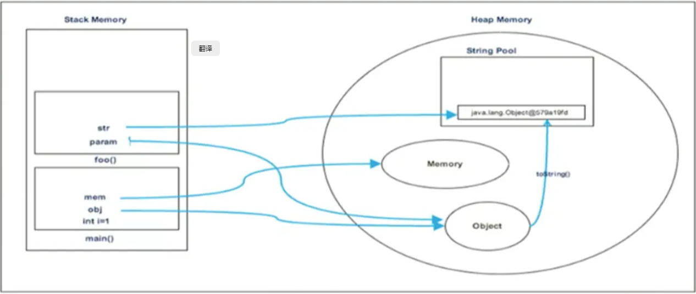

Java虚拟机_字符串常量池StringTable
1.String的基本特性
String：字符串，使用一对""引起来表示。
String sl = “hello”；//字面量的定义方式
String s2 = new String（“hello”） ；
String声明为final的， 不可被继承
String实现了Serializable接口：表示字符串是支持序列化的。 实现了Comparable接口：表示String可以比较大小
String在jdk8及以前内部定义了final char[],value用于存储字符串数据。jdk9时改为byte[] 结论： String再也不用char[] 来存储啦，改成了byte[] 加上编码标记，节约了一些空间。StringBuffer和StringBuilder也做了一些修改
1 2 3 4 public final class String implements java .io .Serializable ， Comparable <String >,CharSequence @Stable private final byte [] value；}
String：代表不可变的字符序列。简称：不可变性。
当对字符串重新赋值时，需要重写指定内存区域赋值，不能使用原有的value进行赋值。
当对现有的字符串进行连接操作时，也需要重新指定内存区域赋值，不能使用原有的value进行赋值。
当调用String的replace（）方法修改指定字符或字符串时，也需要重新指定内存区域赋值，不能使用原有的value进行赋值。
通过字面量的方式（区别于new）给一个字符串赋值，此时的字符串值声明在字符串常量池中。
1 2 3 4 5 6 7 8 9 10 11 12 13 14 15 16 17 18 19 20 21 22 23 24 25 26 27 28 29 30 31 32 33 34 35 36 public class StringTest1 { @Test public void test1 () String s1 = "abc" ; String s2 = "abc" ; s1 = "hello" ; System.out.println (s1 == s2); System.out.println (s1); System.out.println (s2); } @Test public void test2 () String s1 = "abc" ; String s2 = "abc" ; s2 += "def" ; System.out.println (s2); System.out.println (s1); } @Test public void test3 () String s1 = "abc" ; String s2 = s1.replace ('a' , 'm' ); System.out.println (s1); System.out.println (s2); } }
字符串常量池中是不会存储相同内容的字符串的。
String的String Pool（字符串常量池） 是一个固定大小的Hashtable，默认值大小长度是1009。如果放进StringPool（字符串常量池）的String非常多， 就会造成Hash冲突严重，从而导致链表会很长，而链表长了后直接会造成的影响就是当调用String. intern时性能会大幅下降。
使用一XX： StringTableSize可设置StringTable的长度
在jdk6中StringTable是固定的，就是 1009 的长度，所以如果常量池中的字符串过多就会导致效率下降很快。StringTableSize设 置没有要求
在jdk7中，StringTable的长度默认值是 60013
jdk8开始,1009是StringTable长度可设置的最小值
2.String的内存分配
在Java语言中有8种基本数据类型和一种比较特殊的类型String。这些 类型为了使它们在运行过程中速度更快、更节省内存，都提供了一种常量池的概念。
常量池就类似一个Java系统级别提供的缓存。8种基本数据类型的常量 池都是系统协调的，String类型的常量池比较特殊。它的主要使用方法有两种。
直接使用双引号声明出来的String对象会直接存储在常量池中。
比如： String info = “abc” ；
如果不是用双引号声明的String对象，可以使用String提供的intern（）方法。这个后面重点谈
Java 6及以前，字符串常量池存放在永久代。
Java 7中Oracle的工程师对字符串池的逻辑做了很大的改变，即将字符串常量池的位置调整到Java堆内。
所有的字符串都保存在堆（Heap）中，和其他普通对象一样，这样可以让你在进行调优应用时仅需要调整堆大小就可以了。
字符串常量池概念原本使用得比较多，但是这个改动使得我们有足够的理由让我们重新考虑在Java 7中使用String. intern（）。
Java8元空间，字符串常量在堆
StringTable为什么要调整
3.String的基本操作
1 2 3 4 5 6 7 8 9 10 11 12 13 class Memory public static void main (String [] args int i = 1 ; Object obj = new Object (); Memory mem = new Memory(); mem.foo(obj); } private void foo (Object param String str = param.toString(); System.out.println(str); } }

4.字符串拼接操作
1.常量与常量的拼接结果在常量池，原理是编译期优化
2.常量池中不会存在相同内容的常量。
只要其中有一个是变量，结果就在堆中 。变量拼接的原理是StringBuilder
4.如果拼接的结果调用intern（）方法，则主动将常量池中还没有的字符串对象放入池中，并返回此对象地址。
1 2 3 4 5 6 7 8 9 10 11 12 13 14 15 16 17 18 19 20 21 22 23 24 25 26 27 28 29 30 31 32 33 34 35 36 37 38 @Test public void test1 () String s1 = "a" + "b" + "c" ; String s2 = "abc" ; System.out.println (s1 == s2); System.out.println (s1.equals (s2)); } @Test public void test2 () String s1 = "javaEE" ; String s2 = "hadoop" ; String s3 = "javaEEhadoop" ; String s4 = "javaEE" + "hadoop" ; String s5 = s1 + "hadoop" ; String s6 = "javaEE" + s2; String s7 = s1 + s2; System.out.println (s3 == s4); System.out.println (s3 == s5); System.out.println (s3 == s6); System.out.println (s3 == s7); System.out.println (s5 == s6); System.out.println (s5 == s7); System.out.println (s6 == s7); String s8 = s6.intern (); System.out.println (s3 == s8); }
字符串拼接
1 2 3 4 5 6 7 8 9 10 11 12 13 14 15 16 17 18 19 20 21 22 23 24 25 26 27 28 29 30 31 32 33 34 35 36 37 38 39 40 41 42 43 44 45 46 47 48 @Test public void test3 () String s1 = "a" ; String s2 = "b" ; String s3 = "ab" ; String s4 = s1 + s2; System.out.println (s3 == s4); } @Test public void test4 () final String s1 = "a" ; final String s2 = "b" ; String s3 = "ab" ; String s4 = s1 + s2; System.out.println (s3 == s4); } @Test public void test5 () String s1 = "javaEEhadoop" ; String s2 = "javaEE" ; String s3 = s2 + "hadoop" ; System.out.println (s1 == s3); final String s4 = "javaEE" ; String s5 = s4 + "hadoop" ; System.out.println (s1 == s5); }
拼接操作与append的效率对比
append效率要比字符串拼接高很多
1 2 3 4 5 6 7 8 9 10 11 12 13 14 15 16 17 18 19 20 21 22 23 24 25 26 27 28 29 30 31 32 33 34 35 36 37 38 39 40 @Test public void test6 () long start = System.currentTimeMillis (); method2 (100000 ); long end = System.currentTimeMillis (); System.out.println ("花费的时间为：" + (end - start)); } public void method1 (int highLevel) String src = "" ; for (int i = 0 ;i < highLevel;i++){ src = src + "a" ; } } public void method2 (int highLevel) StringBuilder src = new StringBuilder (); for (int i = 0 ; i < highLevel; i++) { src.append ("a" ); } }
5.intern()的使用
如果不是用双引号声明的String对象，可以使用String提供的intern方法： intern方法会从字符串常量池中查询当前字符串是否存在，若不存在就会将当前字符串放入常量池中。
比如： String myInfo = new String(“I love u”).intern()；
new String(“ab”)会创建几个对象,new String(“a”)+new String(“b”)呢
1 2 3 4 5 6 7 public class StringNewTest public static void main (String [] args String str = new String ("a" ) + new String ("b" ); } }
深入剖析： StringBuilder的toString():
对象6 ：new String(“ab”)
强调一下，toString()的调用，在字符串常量池中，没有生成"ab"
关于String.intern()的面试题
1 2 3 4 5 6 7 8 9 10 11 12 13 14 15 16 17 18 19 20 21 22 23 24 25 26 27 28 29 30 31 32 33 34 35 36 37 public class StringIntern { public static void main(String[] args) { String s = new String("1" ) ; String s1 = s.intern() ; String s2 = "1" ; System . == s2); System . == s2); System .System .HashCode(s ) ); System .System .HashCode(s1 ) ); System .System .HashCode(s2 ) ); String s3 = new String("1" ) + new String("1" ) ; s3.intern() ; String s4 = "11" ; System . == s4); } }
拓展
1 2 3 4 5 6 7 8 9 10 11 12 public class StringIntern1 { public static void main (String [] args) String s3 = new String "1" ) + new String "1" ); String s4 = "11" ; String s5 = s3.intern (); System.out.println (s3 == s4); System.out.println (s5 == s4); } }
总结String的intern（）的使用
jdk1.6中，将这个字符串对象尝试放入常量池
➢如果字符串常量池中有，则并不会放入。返回已有的常量池中的对象的地址
➢如果没有，会把此对象复制一份，放入串池，并返回常量池中的对象地址
Jdk1.7起，将这个字符串对象尝试放入常量池。
➢如果字符串常量池中有，则并不会放入。返回已有的常量池中的对象的地址
➢如果没有，则会把对象的引用地址复制一份，放入常量池，并返回常量池中的引用地址
练习
练习1
1 2 3 4 5 6 7 8 9 10 11 12 13 14 public class StringExer1 { public static void main(String [] args) { //String x = "ab" ; String s = new String ("a" ) + new String ("b" );//new String ("ab" ) // 在上一行代码执行完以后，字符串常量池中并没有"ab" String s2 = s.intern();//jdk6中：在串池中创建一个字符串"ab" //jdk8中：串池中没有创建字符串"ab" ,而是创建一个引用，指向new String ("ab" )，将此引用返回 System.out.println(s2 == "ab" );//jdk6:true jdk8:true System.out.println(s == "ab" );//jdk6:false jdk8:true } }
jdk6
jdk7/8
练习2
1 2 3 4 5 6 7 8 9 10 public class StringExer2 { public static void main(String [] args) { String s1 = new String ("ab" );//执行完以后，会在字符串常量池中会生成"ab" // String s1 = new String ("a" ) + new String ("b" );//// 执行完以后，不会在字符串常量池中会生成"ab" s1.intern(); String s2 = "ab" ; System.out.println(s1 == s2); //false } }
intern()效率测试
大的网站平台，需要内存中存储大量的字符串。比如社交网站，很多人都存储：北京市、海淀区等信息。这时候如果字符串都调用 intern（）方法，就会明显降低内存的大小。
1 2 3 4 5 6 7 8 9 10 11 12 13 14 15 16 17 18 19 20 21 22 23 24 25 26 27 28 29 30 31 public class StringIntern2 { static final int MAX_COUNT = 1000 * 10000 ; static final String[] arr = new String[MAX_COUNT ] ; public static void main(String[] args) { Integer[] data = new Integer[] {1 ,2 ,3 ,4 ,5 ,6 ,7 ,8 ,9 ,10 }; long start = System .TimeMillis() ; for (int i = 0 ; i < MAX_COUNT; i++) { arr[i ] = new String(String.valueOf (data [i % data .length ]) ).intern() ; } long end = System .TimeMillis() ; System ."花费的时间为：" + (end - start)); try { Thread .1000000 ); } catch (InterruptedException e) { e.printStackTrace() ; } System .() ; } }
6.StrtingTable的垃圾回收
1 2 3 4 5 6 7 8 9 10 11 12 13 14 15 16 17 public class StringGCTest { public static void main (String [] args) for (int j = 0 ; j < 100000 ; j++) { String .valueOf (j).intern (); } } }
7.G1中的String去重操作
背景：对许多Java应用（有大的也有小的）做的测试得出以下结果：
➢堆存活数据集合里面String对象占了25%
➢堆存活数据集合里面重复的String对象有13.5%
➢String对象的平均长度是45
许多大规模的Java应用的瓶颈在于内存，测试表明，在这些类型的应用 里面，Java堆中存活的数据集合差不多258是String对象。更进一步，这里面差不多一半String对象是重复的，重复的意思是说： string1. equals （string2）=true。堆上存在重复的string对象必然是一种内存的浪费。这个项目将在G1垃圾收集器中实现自动持续对重复的String对象进行去重，这样就能避免浪费内存。
实现
➢当垃圾收集器工作的时候，会访问堆上存活的对象。对每一个访问的对象都会检查是否是候选的要去重的String对象。
➢如果是，把这个对象的一个引用插入到队列中等待后续的处理。一个去重的线程在后台运行，处理这个队列。处理队列的一个元素意味着从队列删除这个元素，然后尝试去重它引用的String对象。
➢使用一个hashtable来记录所有的被String对象使用的不重复的char数组。 当去重的时候，会查这个hashtable，来看堆上是否已经存在一个一模一样的char数组。
➢如果存在，String对象会被调整引用那个数组，释放对原来的数组的引用，最终会被垃圾收集器回收掉。
➢如果查找失败，char数组会被插入到hashtable，这样以后的时候就可以共享这个数组了。
命令行选项
➢UseStringDeduplication （bool） ：开启String去重，默认是不开启的，需要手动开启。
➢PrintStringDedupl icationStatistics （bool） ：打印详细的去重统计信息，
➢StringDedupl icationAgeThreshold （uintx） ：达到这个年龄的string对象被认.为是去重的候选对象
如果您喜欢此博客或发现它对您有用，则欢迎对此发表评论。 也欢迎您共享此博客，以便更多人可以参与。 如果博客中使用的图像侵犯了您的版权，请与作者联系以将其删除。 谢谢 ！